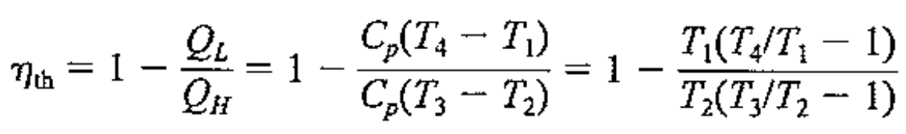
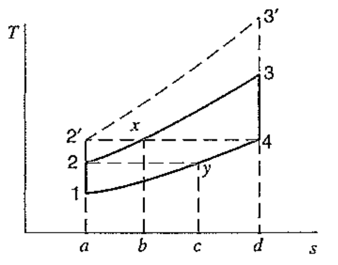
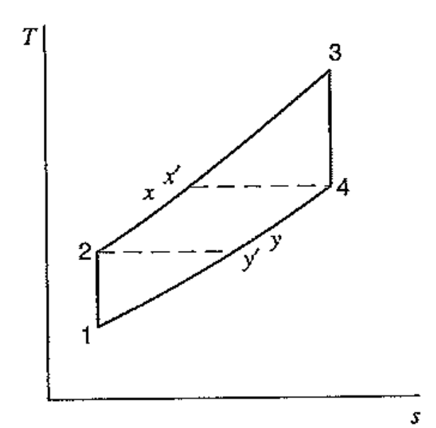

[Thermodynamics] Ch 10. Brayton cycle
자 지금까지
Rankine cycle
Refrigeration cycle
에 대해서 살펴보았고 두 싸이클 모두 과정은 비슷하지만
방향은 정반대였다.
잘 생각해보면 두 과정모두
상변화가 필수적으로 일어났음을 알 수 있다.
why??
먼저 Refrigeration cycle의 경우
기화열을 냉장고에서 이용하기위해 상변화필요
Rankine cycle의 경우 액체 pump를 이용하여
압력을 높이는 work 최소화(specific volume small)
우리는 이러한 상변화가 일어나는 cycle을
Phase change cycle이라고 부른다.
하지만 실제 engine에서는 대부분 gas only cycle을 사용한다.
기체가 가볍고, 온도가 높은 process도 존재하기 때문.
그 중 하나가 우리가 다룰
Brayton Cycle
이다.
![[Thermodynamics] Ch 10. Brayton cycle](./images/img-001.png)
위 figure을 보면 cycle에는 두가지가 있다.
왼쪽 : Open cycle, 오른쪽 Closed Cycle
사실 실제로, cycle의 형상은 좌측, Open cycle이다.
연소과정을 통해서 열을 받고
연소이후 부산물들이 turbine을 지나 밖으로 배출되는 시스템이다.
그리고 새로운 공기가 계속해서 compressor에 주입된다.
즉, 순환기체가 일정하지 않고, 유입 배출을 무한히 반복하는 것:
Open cycle
However, 이렇게 되면 우리가 cycle의 일과 열 효율을 계산 할 수 없기 때문에,
계산을 위한 Closed cycle이라고 다음과 같이 가정하고 시작한다.
Air - standard Cycle assumptions
- Air = Ideal gas
- Combustion process changed to Heat exchange process
- Closed cycle assumption, expel heat to surrounding
- All process are internally reversible
- constant specific heat, evaluated at 300K: Cold air properties
이제 다시 계산을 위한 Assumption 만족 Brayton cycle을 살펴보자.
![[Thermodynamics] Ch 10. Brayton cycle](./images/img-002.png)
잘 보면, 사실 Rankine cylce이랑 비슷하다. 단지, 액체가 없을 뿐.
Heat exchanger (below) = condenser
Compressor = Pump
Heat exchanger (top) = boiler
Turbine 그대로
였다는 것을 랭키 싸이클을 회상하면 알 수 있다.
랭키 싸이클과 마찬가지로,
Heat exchange 가 진행될때
압력이 일정
하다.
따라서, 다음과 같은 그래프가 derived
![[Thermodynamics] Ch 10. Brayton cycle](./images/img-003.png)
자 이제 효율을 구해보자.
QL = h4 - h1 = Cp(T4-T1)
QH = h3 - h2 = Cp(T3-T2)

여기서 우리는 과정 1,2 그리고 3,4가 Isentropic process이라는 것을 알고,
각각의 압력비율이 같음을 알 수 있다.
Istentropic process에서 압력 비율은 온도비율의 power of k/(k-1)로 표현 할 수 있으므로,
![[Thermodynamics] Ch 10. Brayton cycle](./images/img-005.png)
따라서, T2/T1 = T3/T4가 된다.
결국 최종적으로, 효율은
![[Thermodynamics] Ch 10. Brayton cycle](./images/img-006.png)
따라서, 압력비율이 클수록 효율이 증가한다.
Ideal vs Real brayton Cycle
![[Thermodynamics] Ch 10. Brayton cycle](./images/img-007.png)
실제 cycle은 당연히 Isentropic process가 불가능하기 때문에,
Turbine, compressor에서 엔트로피가 증가한다.
뿐만아니라 Reversbile heat exchange가 불가능하므로, constant pressure 또한 불가능
How to improve the efficiency of Brayton Cycle
1. Regeneration
Rankine cycle에서 Regeneartion을 떠올려 보자.
바로, Turbine에서 높은 온도를 이용하여 Qin으로 같이 사용하는 것이다.
똑같은 원리를 Brayton cycle에 적용시켜보면,
실제 Turbine에서 배출되는 byproducts들은 높은 온도일 것이다.
따라서, Regenerator를 이용하여 2 -> x 과정에서 연소전에
더 높은 온도를 만들 수 있다.
![[Thermodynamics] Ch 10. Brayton cycle](./images/img-008.png)
T-s graph를 살펴보면,

2 -> x 까지
는 연소과정에서 열을 얻는게 아니라,
Regenerator를 통해서 얻는 열의 양
이다.
따라서, 실제 Combustion에서 input된 열은
면적 x-3-d-b
일 것이다.
이 경우,
QH = h3 - hx = h3 - h4 = Cp(T3-T4)
QL = hy - h1 = h2 - h1 = CP(T2-T1)
효율 = 1- Qh/Ql
을 계산해보면,
(p2/p1 = p3/p4, T2/T1 = P2/P1^k/k-1 이용)
![[Thermodynamics] Ch 10. Brayton cycle](./images/img-010.png)
해석해보면, regenerator 장착한 brayton cycle의 경우 효율이
압력비율 뿐만아니라, 최고 최저 온도 비율와 관련이 있다.
하지만 반대로, Pressure ration가 증가하면 효율이 감소한다.
Ideal vs real Regenerator
이제 다시 현실로 돌아와야한다. 인셉션처럼
계속해서 현실과 실제를 구분해야한다.
Regenerator 로 인해 4->y 의 열이 모두 2-x로 전달되어,
x의 온도가 정확히 4랑 같은 것은
reversible heat exchange에서나 가능한 것이다.
따라서, 실제 t-s graph는

온도가 x'만큼 실제로 올라가지 않는다.
그리고 regenerator 단독 효율도 정의해준다.
효율 = Actual /Ideal
![[Thermodynamics] Ch 10. Brayton cycle](./images/img-012.png)
![[Thermodynamics] Ch 10. Brayton cycle](./images/img-013.png)
또 다른 효율을 높이는 방법은,
Intercooling, Reheating이 있다.
2. Intercooling & Reheating
![[Thermodynamics] Ch 10. Brayton cycle](./images/img-014.png)
Intercooling의 경우, Compressor와 또 다른 compressor을 연결시키고,
그 사이에 열을 빼앗는 intercooling장치를 넣어준다.
Reheat의 경우, 아예반대로, Turbine과 또 다른 turbine을 연결시키고,
그 사이에 Reheater을 넣어준다.
![[Thermodynamics] Ch 10. Brayton cycle](./images/img-015.png)
왜 이렇게 하면 효율이 높아지는 지는 T-s graph를 보면 알 수 있다.
잘생각해보면, Q in이 많을수록, Q out 도 높아지지만,
cycle내부 면적 즉, 일이 많아져서
효율이 높이 높아지는 것은 당연한 사실이다.
하지만, 문제가 항상있었다. 바로 최대 Temperature 이다.
우리가 사용하는 재료에 Temperature limit이 있기 때문에
무한으로 Qin을 줄수는 없으므로,
위 그래프처럼 옆으로 Qin의 양을 늘려준다.